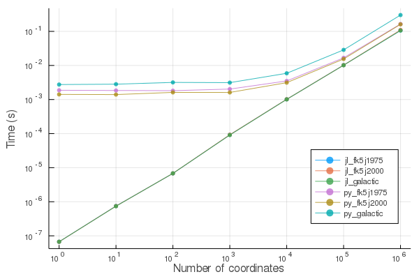

SkyCoords.jl


SkyCoords.jl provides a type system for astronomical coordinate systems with appropriate conversions between them.
Installation
From the Julia REPL
(v1.2) pkg> add SkyCoords
julia> using SkyCoordsUsage
There are currently three supported coordinate systems. The following immutable types are used to represent coordinates in each system:
ICRSCoords: ICRS coordinates systemGalCoords: Galactic coordinates systemFK5Coords: FK5 coordinates system (with arbitrary equinox)EclipticCoords: Ecliptic coordinates system
Each type holds a longitude and latitude, and each is a subtype of AbstractSkyCoords.
julia> c1 = ICRSCoords(0.0, 0.0) # inputs are ra, dec in radians
ICRSCoords{Float64}(0.0, 0.0)
julia> c1.ra # access ra, dec individually
0.0
julia> c2 = convert(GalCoords, c1) # convert to a different system
GalCoords{Float64}(1.6814027872278692, -1.0504884034813007)
julia> c2.l # Note that galactic coordinate fields are l, b
1.6814027872278692
julia> c1 |> FK5Coords{2000} # Can use piping syntax for conversion
FK5Coords{2000, Float64}(1.1102233723050067e-7, 4.411803426976326e-8)Parsing from strings
The AstroAngles.jl package provides convenient string parsing utilities
julia> using AstroAngles
julia> c3 = ICRSCoords(hms"05:34:31.94", dms"+22:00:52.2")
ICRSCoords{Float64}(1.4596726677614607, 0.3842255081802917)for example, to load coordinates from a target list
julia> using CSV, DataFrames
julia> table = CSV.File("target_list.csv") |> DataFrame;
julia> [table.ra table.dec]
203×2 Matrix{String}:
"00 05 01.42" "40 03 35.82"
"00 05 07.52" "73 13 11.34"
"00 36 01.40" "-11 12 13.00"
[...]
julia> coords = @. ICRSCoords(hms2rad(table.ra), dms2rad(table.dec))
203-element Vector{ICRSCoords{Float64}}:
ICRSCoords{Float64}(0.021919880964005448, 0.6991780256843024)
ICRSCoords{Float64}(0.022363485482220672, 1.277926878539953)
ICRSCoords{Float64}(0.15718144355252264, -0.19553990200190915)
[...]Angular Separation between Coordinates
The separation function allows you to compute the angular (great-circle) distance between two coordinates, in radians, using the Vincenty formula. The coordinates can be also given in different systems. For example, according to SIMBAD the FK5Coords{2000} coordinates of Mizar are
julia> mizar = FK5Coords{2000}(3.507787, 0.958628)
FK5Coords{2000, Float64}(3.507787, 0.958628)while the GalCoords coordinates of Alcor are
julia> alcor = GalCoords(1.968189, 1.072829)
GalCoords{Float64}(1.968189, 1.072829)Their angular separation is given by
julia> separation(mizar, alcor) # Radians
0.003435309169452965
julia> rad2deg(separation(mizar, alcor)) * 60 # Arcminutes
11.809723003934822with an angle
julia> position_angle(mizar, alcor) # radians
1.2446024012417884
julia> position_angle(mizar, alcor) |> rad2deg # degrees
71.31046476300233
Accuracy
All the supported conversions have been compared to the results of astropy.coordinates (to better than 0.0001 arcsec agreement for Float64). In turn, astropy.coordinates has been tested against many other tools.
Performance
For small and moderate numbers of coordinates, conversions are much faster than astropy.coordinates in Python. The following plot shows the performance for converting ICRS coordinates to various other systems (Galactic, FK5J2000 and FK5J1975), using astropy.coordinates (py_* labels) and SkyCoords.jl (jl_* labels). The x axis denotes the number of coordinates being simultaneously converted, with 1 corresponding to scalar coordinates.

| Specs | |
|---|---|
| CPU | Intel core i5-8259U @ 2.3GHz (4 cores) |
| RAM | 16GB |
| Julia Version | 1.2 |
| Python Version | 3.7 |
| Astropy Version | 3.1.2 |
For scalar coordinates, SkyCoords.jl is up to 100,000 times faster. For very large vectors of one million coordinates or more, SkyCoords.jl is 2-4 times faster. The source code for these benchmarks can be found in bench/.
Contributing
If you would like to contribute to SkyCoords please head over to the GitHub page and file an issue or open a pull request!